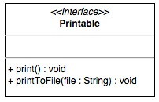
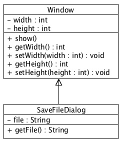
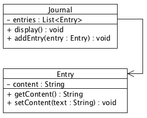
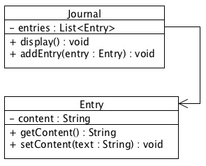

07 Prepare : Reading
UML Basics
Objectives
Understand the most commonly used parts of UML.
Introduction
UML (Unified Modeling Language) gives us a powerful way to model different components of our programs in a language-agnostic manner, so we can focus on the architecture, organization, and design, without worrying about syntactic details.
UML is very descriptive and has many details that allow us to specify very minor differences. However, for this class, for simplicity, we will focus on a more loose view of UML and only use the notation described herein to model our classes, interfaces, and the relations among them.
Boxes for all classes and interfaces
All custom classes and interfaces should be present in the diagram, in a rectangular box. The top section refers to the name, the middle section holds the member variables, and the bottom lists the methods. (We do not need to include classes from libraries we use unless there is a specific need to bring one out). The name of an interface should be underneath the text "<<Interface>>". Remember that class names should be nouns.
Data and method annotations
Member variables and methods are preceded by a symbol indicating their accessibility (+ public, # protected, - private). The data type, or return type is specified after the name. Remember that variable names should be nouns, method names should be verbs.
The following is an example of a class:

And the following is an example of an interface:
Rule 3 - Inheritance Relationships
Inheritance relationships ("is-a") are designated with an arrow from the derived sub-class to the base class (or interface). The arrowhead, should be the open, "triangle" arrow, appearing at the bottom of the superclass. This arrow should always leave the top of a sub-class, and should always enter the bottom of a super-class (never on the sides). If space limitations require putting classes on the side of each other the arrow should still go out the top, around the boxes, and then into the bottom.
The following are examples of proper inheritance relationships:

Composition Relationships
Composition relationships ("has-a") as well as "uses-a" relationships should be shown with an arrow leaving and entering the side of the class. The arrow should point from the owning class to the one that is owned/used. The arrowhead should be the standard two-line arrow (not a block arrow or filled one). If space limitations require the classes to be above and below one another, the arrows should still leave and enter from the sides of the boxes.
The following are examples of proper composition relationships:
 

Professional Appearance
Diagrams should be professional in appearance. They should not be hand drawn. There are several free software packages available, find one that you like and get familiar with it.
Reading Quiz
Don't forget to take the Reading Quiz in I-Learn. This quiz can be taken as many times as you like, but you must score at least 90% to pass. If you fail the quiz, review the relevant parts of the reading and try again.
As before, one of the quiz questions is a "deep thought" question whose answer won't come directly from the reading.